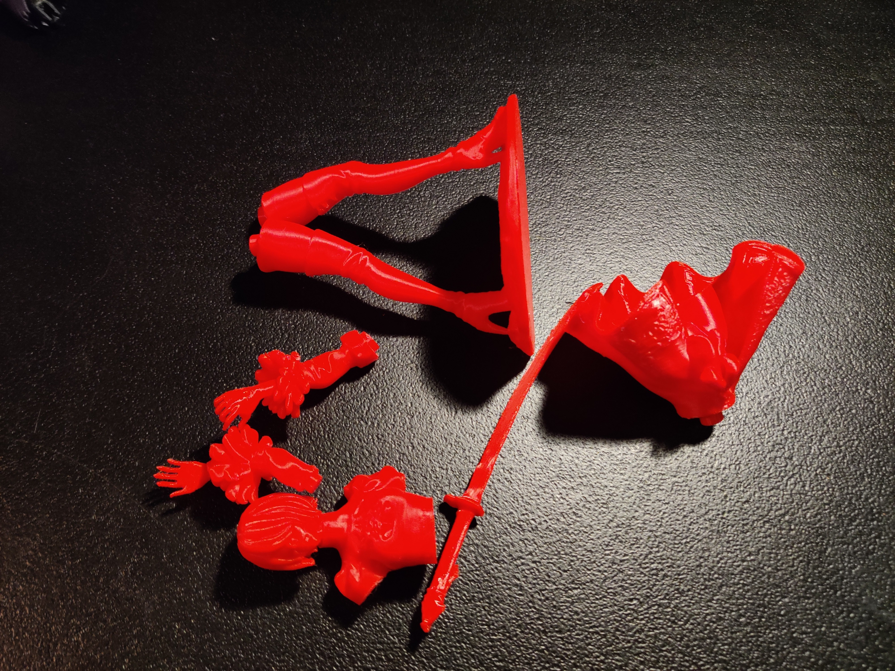
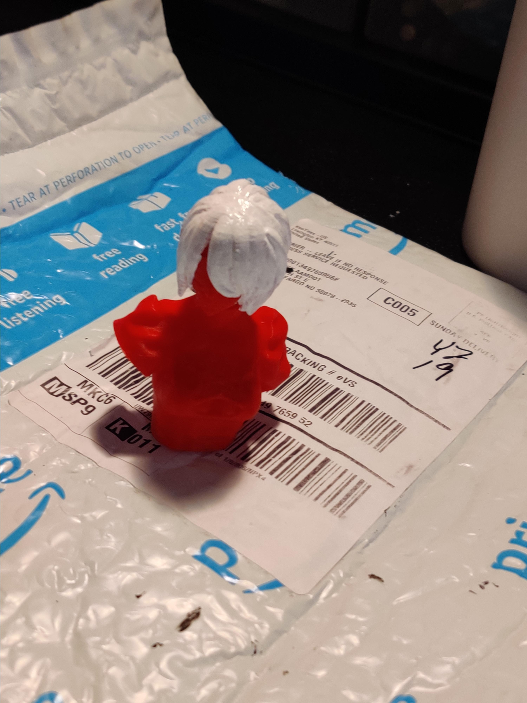
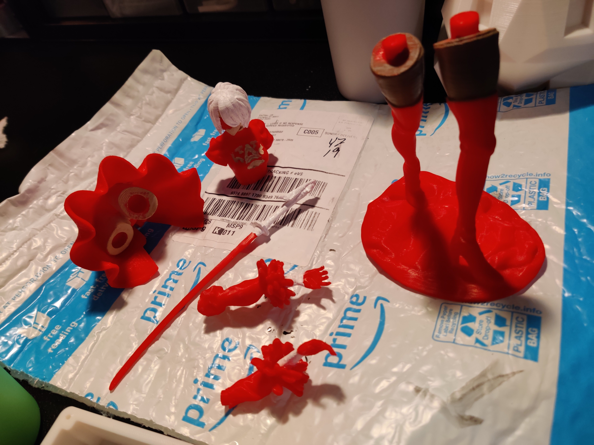
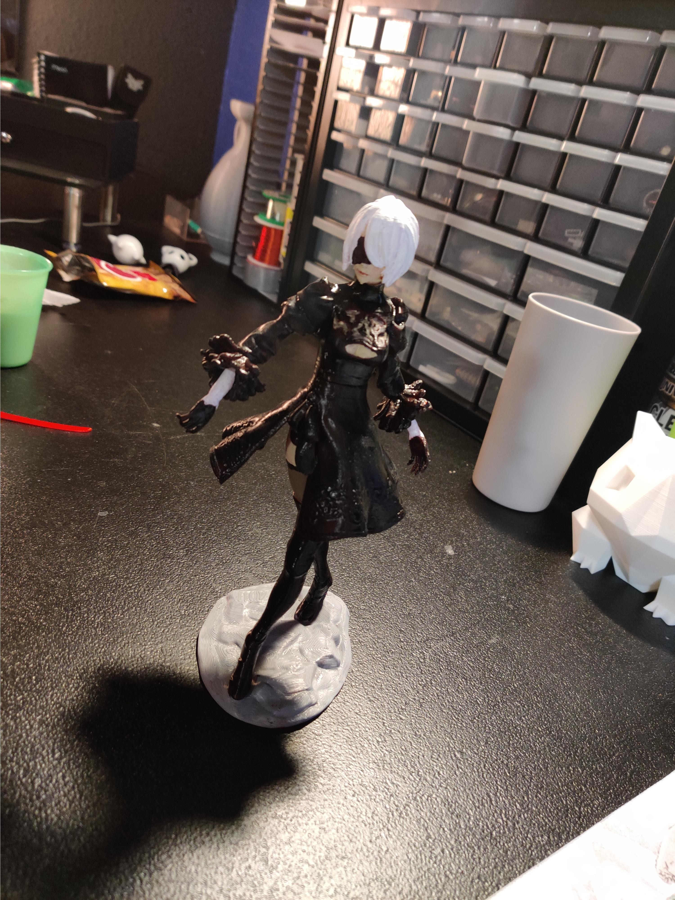
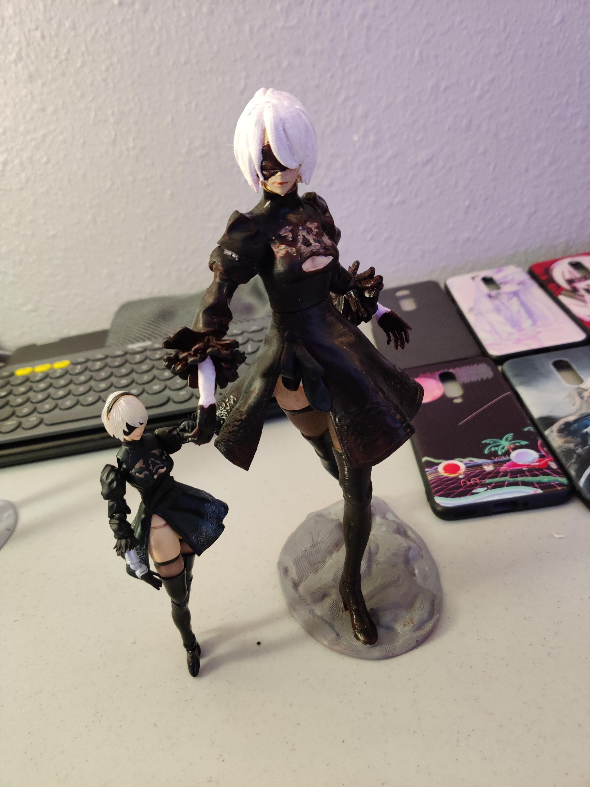

—「0X://Explanation」
A poorly painted 2b, don't look too close pls ♡

after getting my 9s done i wanted to try something more challenging. i didnt try any new tactics, just painted! no sanding actually eheh~
things in this project:
> acrylic paints
> spray filler
> printer filament (red)
> brushes
first i printed this 2b model > found here <

then i just started painting! no sanding this time cuz it was rainy and this model was printed finer than my 9s.

all done paintin! it needs a second coat (cuz u can still see some red ;;), but for now this is how it turned out, it looks alright under average lighting.

its alot bigger than the official 2b

┈ ren ♡